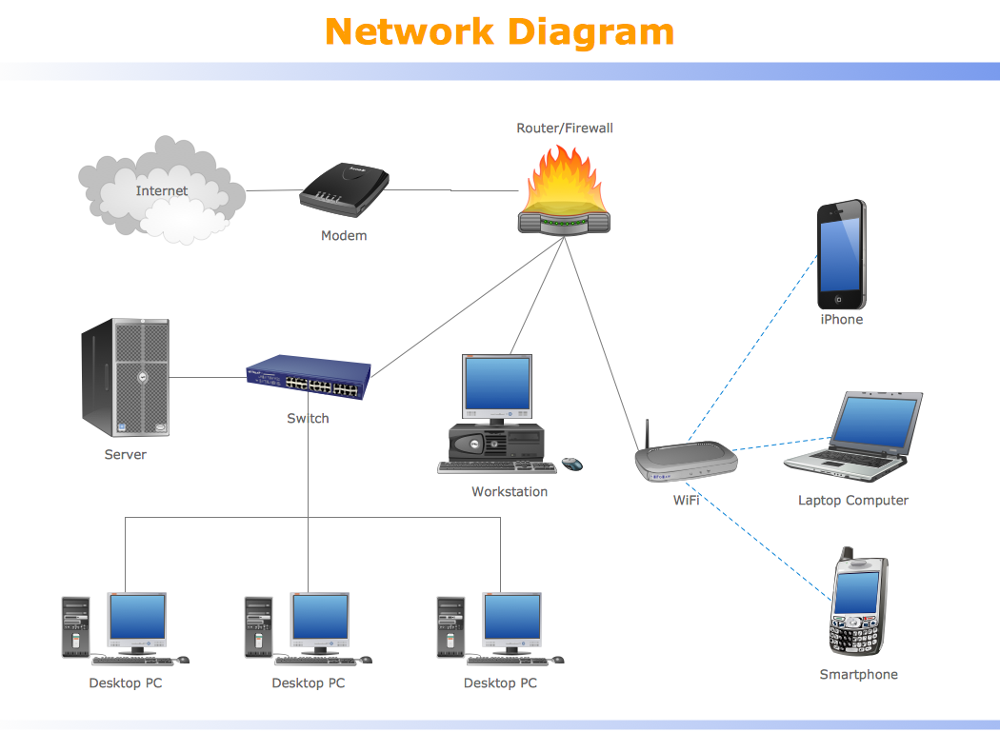
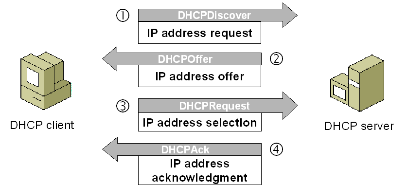

Intro
In this overview, we'll explore three key components of modern networking: DNS, DHCP, and routers/switches. These technologies play crucial roles in how devices communicate and access the internet or other network resources. Each one serves a specific function within a network infrastructure, working together to ensure seamless data transmission and connectivity. Understanding their roles helps clarify how networks operate efficiently and reliably.
Router and switch
Routers and switches are essential hardware devices that manage the flow of data within and between networks. Routers direct traffic between different networks, such as between a home network and the internet, using IP addresses to determine the best path for data. Switches, on the other hand, operate within a single network, connecting devices like computers, printers, and servers. They use MAC addresses to forward data to the correct device within the local network. Together, routers and switches ensure that data is delivered efficiently and accurately across complex network environments.
DNS
DNS (Domain Name System) is often described as the internet's phonebook. It translates human-readable domain names (like www.example.com) into IP addresses that computers use to identify each other on the network. DNS ensures users can access websites without needing to memorize long strings of numbers. When a user enters a website address, the DNS server quickly resolves it to the appropriate IP address, allowing the browser to locate the website’s server. DNS also supports email delivery and other network services by mapping domain names to the appropriate servers and addresses.

DHCP
DHCP (Dynamic Host Configuration Protocol) is responsible for automatically assigning IP addresses to devices on a network. When a device connects to a network, the DHCP server provides it with a unique IP address, along with other configuration details such as the subnet mask and default gateway. This dynamic allocation reduces manual network configuration and ensures that IP addresses are efficiently reused. Without DHCP, network administrators would need to assign addresses manually, which can be error-prone and time-consuming, especially in large networks.
